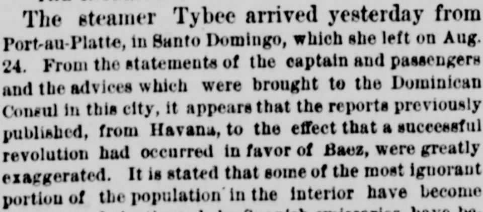
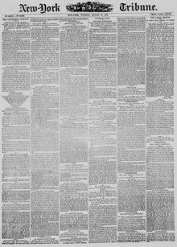

See the full pageVer la página completaAnd the advices which were brought te the Dominican Consul inY las noticias que fueron traídas al Cónsul dominicano en
Based on the provided excerpt, the New-York Tribune reported on August 31, 1875, that prior reports of a successful revolution in favor of Baez were greatly exaggerated, attributing the rumors to treasonable correspondence by a wealthy Spanish resident who was subsequently expelled. According to advices received by the Dominican Consul and statements from Capt. Gardiner of the steamer Tybee, unrest was limited to minor lawlessness and murmurings by some ignorant and uneducated portions of the interior population instigated by Spanish emissaries. The newspaper also described President Don Ignacio Gonzales as a cultured and intelligent leader supported by the intelligent and wealthy classes, ruling against tyranny and oppression.Según el extracto facilitado, el New-York Tribune reportó el 31 de agosto de 1875 que las noticias previas de una exitosa revolución en favor de Báez eran muy exageradas, achacando los rumores a correspondencia sediciosa de un acaudalado residente español que fue subsiguientemente expulsado. De acuerdo con informes recibidos por el cónsul dominicano y declaraciones del capitán Gardiner del vapor Tybee, la alteración se limitaba a desmanes menores y murmuraciones de algunos sectores incultos de la población del interior azuzados por emisarios españoles. El diario describió además al presidente don Ignacio González como un dirigente culto e inteligente, respaldado por las clases ilustradas y acomodadas, opuesto a la tiranía y la opresión.
FULL TEXT:TRADUCCIÓN:
THE INSURRECTION IN SANTO DOMINGO.LA INSURRECCIÓN EN SANTO DOMINGO.
ARRIVAL OF A MAIL STEAMER—THE REPORTS SAID TO BE EXAGGERATED—SPANISH INTRIGUES TO UPSET THE GOVERNMENT—TROOPS SENT INTO THE INTERIOR.LLEGADA DE UN VAPOR CORREO—LOS INFORMES DICEN SER EXAGERADOS—INTRIGAS ESPAÑOLAS PARA DERRIBAR AL GOBIERNO—TROPAS ENVIADAS AL INTERIOR.
The steamer Tybee arrived yesterday from Port-au-Platte, in Santo Domingo, which she left on Aug. 24. From the statements of the captain and passengers and the advices which were brought to the Dominican Consul in this city, it appears that the reports previously published, from Havana, to the effect that a successful revolution had occurred in favor of Baez, were greatly exaggerated. It is stated that some of the most ignorant portion of the population in the interior have become restless, and instigated by Spanish emissaries, have become insubordinate and riotous, but their conduct has not, it is asserted, assumed the gravity of a rebellion or a revolution. One of the wealthiest Spanish residents, having been found to be guilty of treasonable correspondence, has been expelled the country, and it was stated that he was responsible for the exaggerated reports which have been telegraphed to this city.El vapor Tybee llegó ayer procedente de Port-au-Platte, en Santo Domingo, que salió el 24 de agosto. De las declaraciones del capitán y los pasajeros y las noticias que fueron traídas al Cónsul dominicano en esta ciudad, resulta que los informes previamente publicados, desde La Habana, en el sentido de que había ocurrido una revolución exitosa en favor de Báez, fueron grandemente exagerados. Se afirma que alguna de la porción más ignorante de la población en el interior se ha vuelto inquieta, e instigada por emisarios españoles, se ha vuelto insubordinada y revoltosa, pero su conducta no ha, se afirma, asumido la gravedad de una rebelión o una revolución. Uno de los residentes españoles más ricos, habiendo sido encontrado culpable de correspondencia traicionera, ha sido expulsado del país, y se afirmó que él era responsable de los informes exagerados que han sido telegrafiados a esta ciudad.
Capt. Gardiner, the commander of the steamer Tybee, said that if any revolution had existed he would have known it. He had heard that in the vicinity of Samana and Santiago some lawlessness had prevailed. There had been murmurings against the Government, and in favor of Baez, but there had been no rebellion or revolution. The President of the Republic, Don Ignacio Gonzales, was a highly educated man, a gentleman of culture and intelligence, disposed to rule the people by kind acts and wise laws, and opposed to every form of tyranny and oppression. He was favored and supported by all the intelligent and wealthy men in the Republic, and it was only the illiterate and uneducated who were opposed toEl capitán Gardiner, el comandante del vapor Tybee, dijo que si revolución alguna hubiera existido lo habría sabido. Había oído que en la vecindad de Samaná y Santiago alguna ilegalidad había prevalecido. Había habido murmuraciones contra el Gobierno, y en favor de Báez, pero no había habido rebelión ni revolución. El Presidente de la República, Don Ignacio Gonzales, era un hombre altamente educado, un caballero de cultura e inteligencia, dispuesto a gobernar al pueblo con actos amables y leyes sabias, y opuesto a toda forma de tiranía y opresión. Era favorecido y apoyado por todos los hombres inteligentes y ricos de la República, y eran solo los iletrados e ineducados los que se oponían a
New-York Tribune. New York, August 31, 1875.
See the original at the Library of CongressVer el original en la Biblioteca del Congreso
Published by: New York Tribune, 1866-1924.Publicado por: New York Tribune, 1866-1924.
Edition: Edition 1Edición: edición 1
Page: 1Página: 1
Frequency: daily (1866–1924)Frecuencia: diario (1866–1924)
Collection: Chronicling America, Library of CongressColección: Chronicling America, de la Biblioteca del Congreso
LCCN: sn83030214LCCN: sn83030214
ISSN: 1941-0646ISSN: 1941-0646
OCLC: 9405688OCLC: 9405688
Rights: public domain, according to the Library of CongressDerechos: dominio público, según la Biblioteca del Congreso